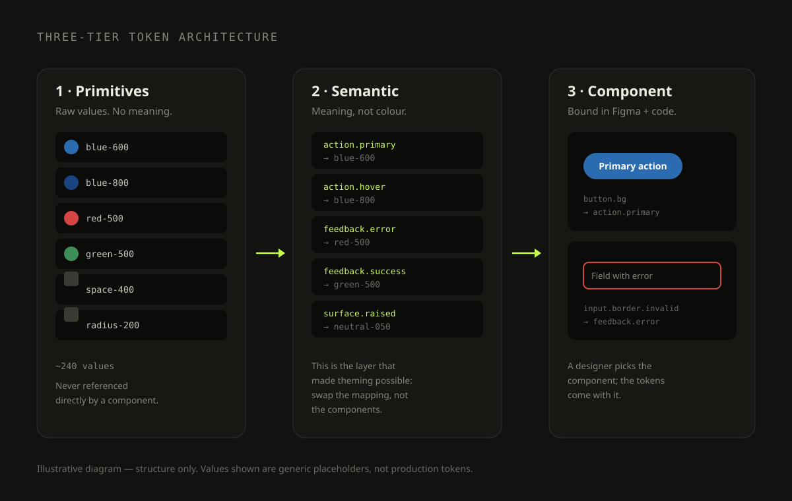
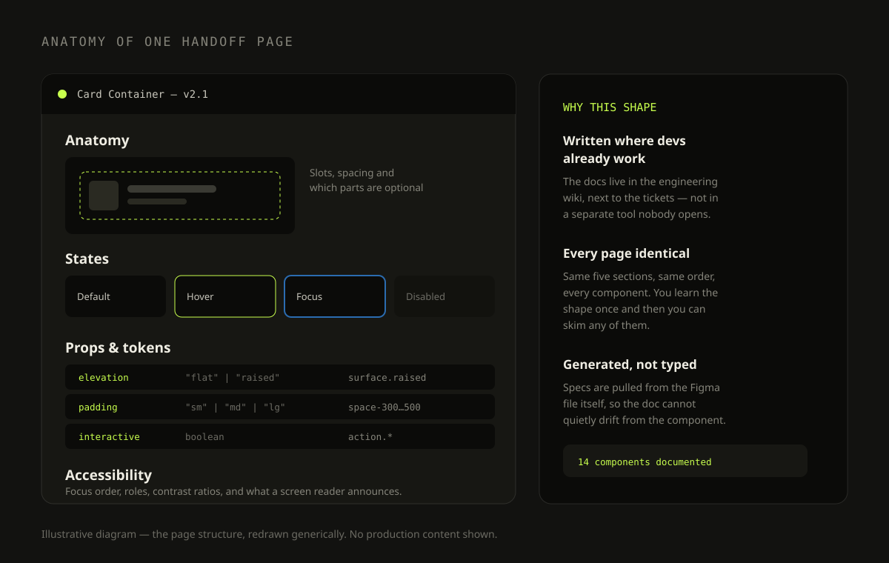
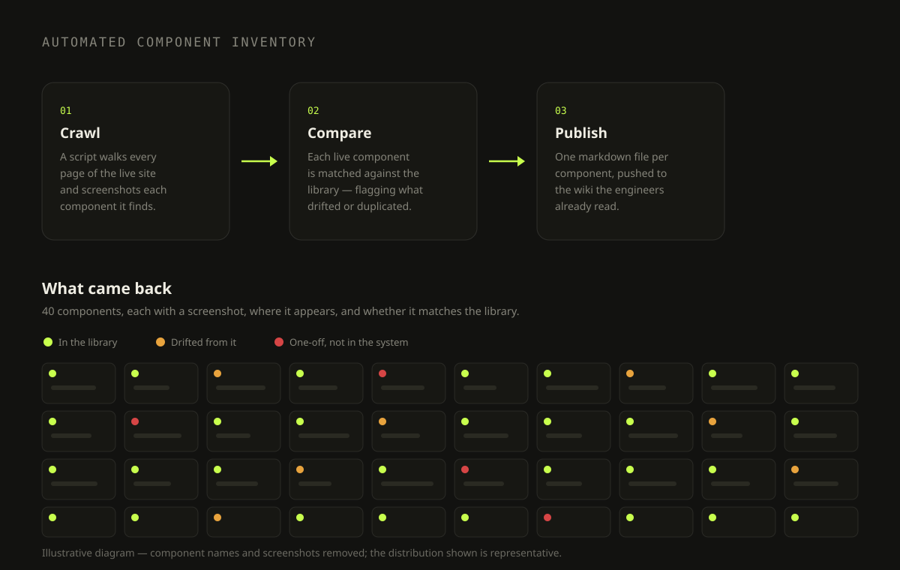

Consolidating Legacy Design Systems into One Token-Based Library
Connecting Product, Design and Engineering across a global agricultural platform

I lead the design system work at BASF Digital Solutions, consolidating several legacy systems into a single token-based library behind a global customer portal — catalogue, orders, financial documents, service and account, in multiple countries and languages.
The job is less about drawing components and more about making one set of decisions hold across teams, markets and codebases — and keeping design and engineering pointed at the same source.
Described at a structural level: diagrams are my own redrawings and no production interface, client data or internal tooling appears. Happy to walk through the real work in a call.
The portal is one product on paper and a dozen in practice: a catalogue and product pages, a cart and checkout, order visibility, financial documents, a service area and account settings — each with per-market variants, its own language handling and its own consent rules. Those areas had grown their own design languages over the years: their own buttons, their own spacing logic, their own idea of what "error red" meant. Teams in different regions shipped interfaces recognisable as the same company only by the logo, and every new feature began by rebuilding something that already existed elsewhere.
- Several parallel design systems, none of them complete, all of them diverging.
- Every pattern has to survive translation, a different market's rules and a different content length — so a component that only works in one language is not finished.
- No shared vocabulary between designers and developers — handoff was a conversation, repeated per feature.
- Documentation lived in tools engineers did not open, so it was always slightly out of date.
- No way to know what was actually in production versus what the library said should be.
Build one token-based design system that teams adopt because it is faster than not adopting it — and keep it honest by generating its documentation from the design files themselves.
- Define the token architecture and the naming that holds it together.
- Build and document the component library, with accessibility specified rather than assumed.
- Run the inventory and QA that tells us what is really shipping.
- Work with product owners and developers to turn requirements into components the system already has.
Component inventory of the live product. Rather than guess at the gap between library and reality, I wrote a crawler that walks the live site, screenshots every component it finds and files one markdown page per component. It produced 40 component pages — and a clear list of what had drifted, what was duplicated, and what had been built one-off.
Working sessions with engineering. I sat with the developers consuming the library to find where the handoff actually broke. The answer was rarely the visual spec; it was missing states, undefined edge cases and props that did not map to anything in Figma.
Density feedback from real users. Users told us the interface felt oversized on dense data screens. That fed a layout-density initiative — prototyped in HTML so stakeholders could feel the difference rather than judge it from a static frame.
Three-tier tokens — the decision that paid for itself at the first rebrand. Tokens are split into primitives (the raw palette and scale), semantic names that carry meaning rather than appearance — text, surface, stroke, icon and form roles — and component-level bindings on top. Components never reference a raw value. It is more structure up front, and it stopped being theoretical the first time a brand refresh had to roll across the whole portal: that became a remapping job instead of a hunt through component files.
Spacing scoped by where it applies. The spacing scale is not one global ramp. It is split by context — space inside a component, space between blocks, space across a page — so a designer choosing spacing is choosing the kind of gap, not guessing a number. It is the single change that most reduced the "why is this 12 and that 16" conversation in reviews.
One interaction pattern instead of four. Several areas of the portal needed the same move: open a detail layer over a list without losing your place. The tempting route was to solve it locally in each area. I explored it once as a shared pattern and tested it against all of them, because four bespoke solutions would have been four things to maintain and four things for a user to learn.
Documentation generated, not written. Handoff specs are generated from the design file and published to the engineering wiki, beside the tickets. Writing them by hand guarantees drift: the doc is accurate the day you write it and wrong a month later. I documented 14 components this way, each with the same five sections — anatomy, states, props, tokens, accessibility — so the shape is learned once and skimmed thereafter.
Decisions recorded next to the work. Each area of the portal carries its own notes alongside the designs: what was decided, what was rejected and why. Six months later the question is never "what does this look like" — it is "why is it like this", and that answer is the one that normally walks out of the door with whoever made it.
Adoption treated as a design problem. A system nobody uses is a hobby. I ran the component QA myself — checking the built Angular components against the Figma source for visual fidelity, behaviour, accessibility and API — and fixed token bindings where they had come loose. Reviewing the implementation is what keeps the library trustworthy enough to be worth adopting.



A single token-based system now backs the catalogue, ordering, financial, service and account areas, replacing the parallel legacy systems.
The inventory is automated, so the gap between library and production is a report rather than an argument.
Specs arrive with the ticket instead of being negotiated per feature — the recurring design-to-dev conversation largely disappeared.
Rolling a visual refresh across the system meant changing the semantic layer, not reopening every component.
- Designers reach for the system first, because it is now the shortest path rather than the correct-but-slower one.
- Engineering and design argue about the same artifact instead of about two different ones.
- A semantic layer feels like over-engineering right up until the first brand change — then it is the only reason the work is survivable.
- Multi-market is a design-system problem before it is a translation problem. A component that assumes one language's word length, one market's consent rules or one country's checkout has to be rebuilt on contact with the second market.
- Documentation that is written by hand will drift; documentation that is generated stays true.
- Adoption is not a rollout email. It comes from reviewing implementations and making the system the fastest route.